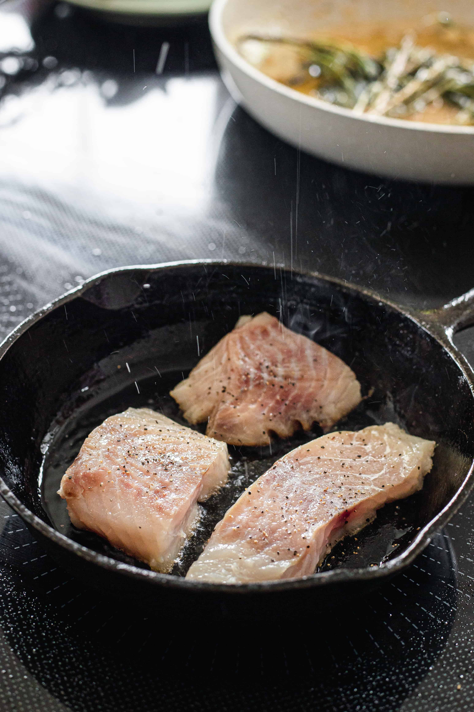

Steamed Fish

A great way to cook a delicate white fish like tilapia, crappie, or bass
taught to me by Fernando.
Ingredients
- Skillet with a lid
- olive oil
- salt
- slices of onion, medium thickness
- thin fish fillets
- slices of lemon (optional)
- other spices (optional)
Preparation
- Pat the fish dry and add salt
- Heat the oil in a skillet to medium heat
- Brown the fish on one side for one minute
- Flip the fish and brown for one more minute
- Remove the fish and add the onion. Brown it if you like
- Place the fish on top of the onion.
- Optionally add your other spices
- Put the lid on and turn heat to low. You can even turn it off completely.
- Leave the skillet on the stove for 10 minutes
- Optionally squeeze lemon on the fish
Back to all Recipes